Tempo Recreates the Music Experience
Make sharing, managing, and finding music easier for music lovers.
Challenge & Goals
With so many music applications out there, how do we choose which one to use? One of the popular ones include Spotify, SoundCloud, and Apple Music, and they each possess a uniqueness that makes them so popular among music lovers. My goals are to compare these music apps, determine why one is better than others, and recreate a better overall mobile experience that supports music streaming.
My Role
In the span of two weeks, I, with two other classmates, developed a high-fidelity wireframe using Sketch and InVision that showcases a better user experience for music management.
Things that I did:
- I interviewed users to uncover different user scenarios.
- I researched the information architectures for different music apps to understand the user flow and the navigation structures/labels used.
- I did a competitive analysis on Spotify, SoundCloud, and Apple Music to see what each app does well or poorly.
- I developed prototypes for the redesign using Sketch and InVision.
User Research
To better understand our users and their experiences, we conducted interviews with people who regularly listen to music through their mobile phones. We not only interviewed them, but also asked them to perform a few scenarios for us.
Here are a few of the many questions that we asked our interviewers:
- What music application do you mainly use and why?
- How do you manage your playlists?
- How do you discover new songs to add into your playlist?
- What frustrates you when you use the app?
- Can you give us a walkthrough on how you create playlists?
After talking with interviewers and observing their uses with different music apps, we learned that the process of creating a playlist consists of many small steps regardless of the purpose of the playlist.
While 8 out of 10 interviewers prefer using Spotify because finding songs and creating playlist is relatively easier, we noticed from the walkthroughs users had to repeatedly search for artists and albums to look for specific songs to add to playlist. We found this process to be extremely tedious and time-consuming, which gave us an opportunity to redesign and make it better.
This insight brings us to our next question: in what scenarios do our users create playlists for? How can we expediate this process by tailoring to the user need? We understand that there are many different ways to create playlist. For example, users can create a playlist based on a specific genre, or just particular songs that they like, or movie soundtracks. We wanted to learn how people differ when asked to complete a similar task.
We came up with a few distinct user scenarios based on interviewers' answers and our observations.
- Creating a playlist for the gym.
- Creating a playlist for a music festival.
- Creating a playlist for each season.
- Creating a playlist for a specific genre of music.
- Creaitng a playlist for what other people suggested.
Although these scenarios accomplish the same task, they differ in how users can create a playlist. Each of these scenarios required different preparation steps, and they allowed us to identify who our users are, what they need, and why they need it.
Brainstorming
Since our goal was to improve the time it takes for users to create playlist without much repetitions, we wanted to target each user scenario and create a personal experience for users depending on what type of playlist they want to create. Due to the time constraint, however, we were only able to target "creating a playlist for a music festival". We chose this scenario to guide us because this is a common scenario and none of the music app currently has a user-friendly way to accomplish this task.
The current steps to creating a playlist for music festivals are 1) find the artists performing 2) listen to the songs 3) add to playlist 4) repeat 1-3 for each artist performing.
Conducting Competitive Analysis
To understand how each of the existing app creates playlist differently, we explored Spotify, SoundCloud, and Apple Music to see what features they do well or poorly.
Creating Sitemaps
Next, as a team, we used draw.io to develop sitemaps for Spotify, SoundCloud, and Apple Music to analyze the navigational structures and the labels they used so we could learn more about the user flows.
Prototyping & Wireframing
While we were creating a new music app that is better suited for creating playlists for music festival, many discussions about design decisions came up.
One of the main problems that we faced was what kind of contents we should put on our home screen without making it too cluttered. Comparing Spotify and SoundCloud, we noticed that each of their home screen shows different contents. For Spotify, the home screen shows content that users use the most, such as recently played lists and song suggestions. Soundcloud’s home page, on the other hand, shows what user’s friends are reposting. Thus, we learned that “home” is a confusing term in this context since it does not have a definite meaning.
We wanted our “home” screen to be a place where users can find what they want with as few clicks as possible since it is the first screen users will see when they open the app. From our interviews, we learned from the users that some of the things they often look for are songs and playlists in their libraries so that they can play music right away when they first open the app. Therefore, we decided to make “My Music” our homepage instead and included recently played songs, playlists, artists, and albums since users look within these four categories the most.
Another question we struggled to answer was whether we should have two separate screens for browse and search. The purpose of browse and search is similar in a way that they both are meant to look up and explore songs. One distinct difference is that browsing usually means discovering new songs, whereas searching indicates looking up a specific song, artist, or playlist. How can we show this difference between browse and search without confusing the meanings and complicating our design? After exploring different ideas and asking users for feedback, we noticed that browse usually contains lots of information that will require the whole screen whereas a simple search bar is enough for looking up songs. We felt that since browse is such an important and useful category, we needed to include it in our main navigation bar. However, according to our users, a simple search icon is intuitive enough to show that it is meant for looking up songs. In our final design, we included a simple search icon on the top right corner on every page so it is easy to find since it is a common feature that users use. We also included a browse screen in main nav bar that allow users to discover new songs easily.
With these topics in mind, I sketched out a quick paper prototype to demonstrate the flow.
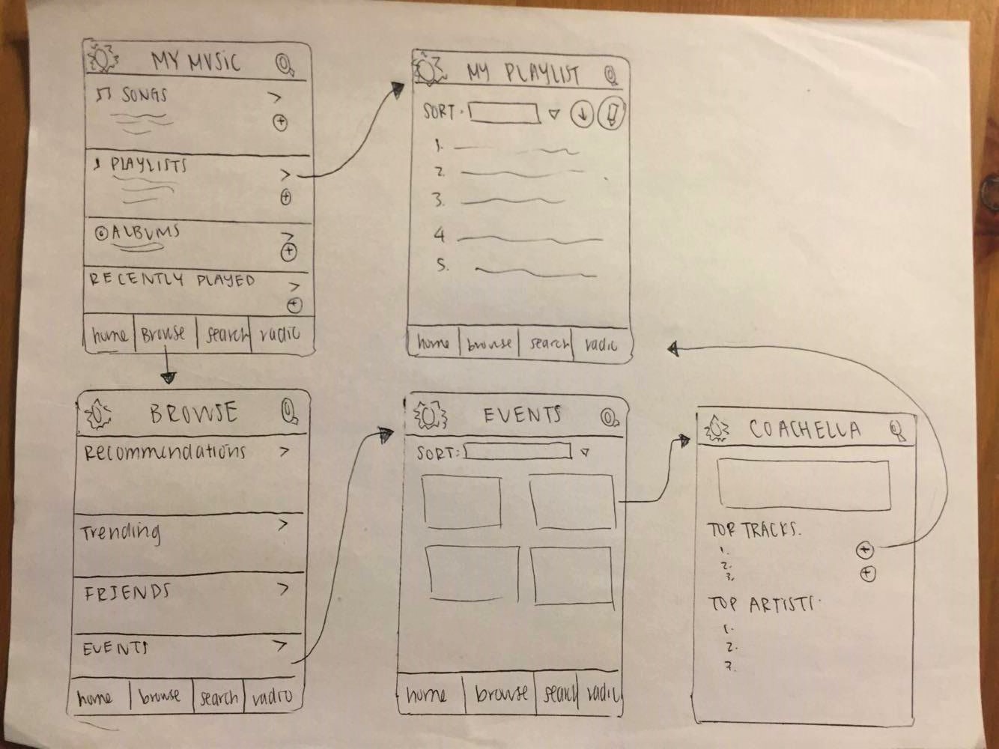
After many iterations of user testing and designing, my team and I used Sketch and InVision to design a high-fidelity interactive prototype.
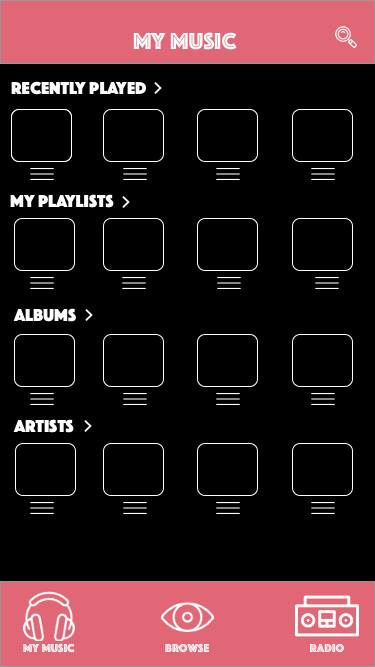
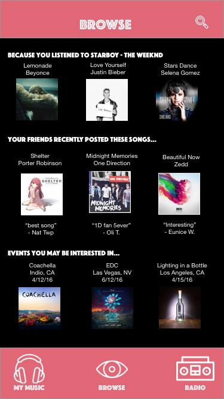
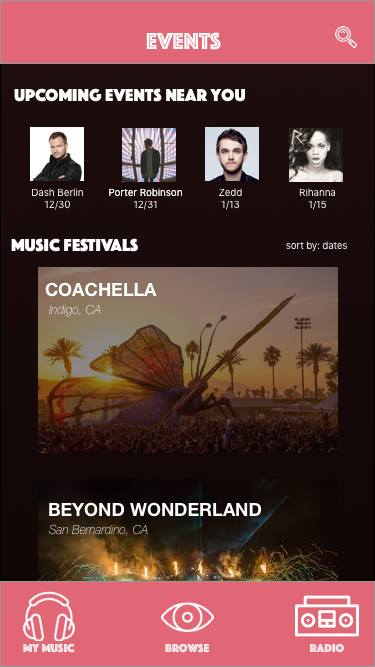
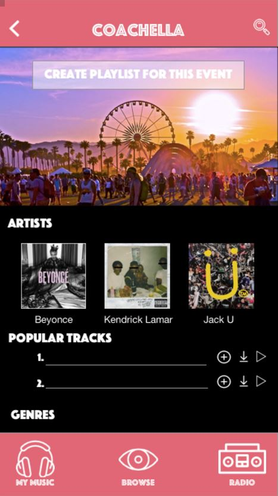
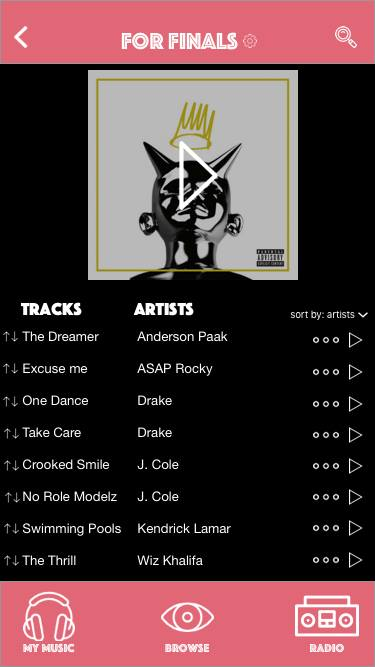
Conclusion
This project was definitely a lot more difficult than I thought since there were many well-developed music streaming apps in the market. We constantly had to ask ourselves why should we use our apps and not Spotify, or SoundCloud, or Apple Music. There were many opportunties for improvements if given more time. For example, we could have focused on other functionalities, like managing playlists and downloading songs offline. From this exercise, I learned a lot about information architecture. Since music for browsing contains lots of information and different categories, it was insightful to learn how each music app categorizes genres and handles different tasks.
'
In the span of two weeks, I, with two other classmates, developed a high-fidelity wireframe using Sketch and InVision that showcases a better user experience for music management.
Things that I did:
- I interviewed users to uncover different user scenarios.
- I researched the information architectures for different music apps to understand the user flow and the navigation structures/labels used.
- I did a competitive analysis on Spotify, SoundCloud, and Apple Music to see what each app does well or poorly.
- I developed prototypes for the redesign using Sketch and InVision.
To better understand our users and their experiences, we conducted interviews with people who regularly listen to music through their mobile phones. We not only interviewed them, but also asked them to perform a few scenarios for us.
Here are a few of the many questions that we asked our interviewers:
- What music application do you mainly use and why?
- How do you manage your playlists?
- How do you discover new songs to add into your playlist?
- What frustrates you when you use the app?
- Can you give us a walkthrough on how you create playlists?
After talking with interviewers and observing their uses with different music apps, we learned that the process of creating a playlist consists of many small steps regardless of the purpose of the playlist. While 8 out of 10 interviewers prefer using Spotify because finding songs and creating playlist is relatively easier, we noticed from the walkthroughs users had to repeatedly search for artists and albums to look for specific songs to add to playlist. We found this process to be extremely tedious and time-consuming, which gave us an opportunity to redesign and make it better.
This insight brings us to our next question: in what scenarios do our users create playlists for? How can we expediate this process by tailoring to the user need? We understand that there are many different ways to create playlist. For example, users can create a playlist based on a specific genre, or just particular songs that they like, or movie soundtracks. We wanted to learn how people differ when asked to complete a similar task.
We came up with a few distinct user scenarios based on interviewers' answers and our observations.
- Creating a playlist for the gym.
- Creating a playlist for a music festival.
- Creating a playlist for each season.
- Creating a playlist for a specific genre of music.
- Creaitng a playlist for what other people suggested.
Although these scenarios accomplish the same task, they differ in how users can create a playlist. Each of these scenarios required different preparation steps, and they allowed us to identify who our users are, what they need, and why they need it.
Brainstorming
Since our goal was to improve the time it takes for users to create playlist without much repetitions, we wanted to target each user scenario and create a personal experience for users depending on what type of playlist they want to create. Due to the time constraint, however, we were only able to target "creating a playlist for a music festival". We chose this scenario to guide us because this is a common scenario and none of the music app currently has a user-friendly way to accomplish this task.
The current steps to creating a playlist for music festivals are 1) find the artists performing 2) listen to the songs 3) add to playlist 4) repeat 1-3 for each artist performing.
Conducting Competitive Analysis
To understand how each of the existing app creates playlist differently, we explored Spotify, SoundCloud, and Apple Music to see what features they do well or poorly.
Creating Sitemaps
Next, as a team, we used draw.io to develop sitemaps for Spotify, SoundCloud, and Apple Music to analyze the navigational structures and the labels they used so we could learn more about the user flows.


Prototyping & Wireframing
While we were creating a new music app that is better suited for creating playlists for music festival, many discussions about design decisions came up.
One of the main problems that we faced was what kind of contents we should put on our home screen without making it too cluttered. Comparing Spotify and SoundCloud, we noticed that each of their home screen shows different contents. For Spotify, the home screen shows content that users use the most, such as recently played lists and song suggestions. Soundcloud’s home page, on the other hand, shows what user’s friends are reposting. Thus, we learned that “home” is a confusing term in this context since it does not have a definite meaning.
We wanted our “home” screen to be a place where users can find what they want with as few clicks as possible since it is the first screen users will see when they open the app. From our interviews, we learned from the users that some of the things they often look for are songs and playlists in their libraries so that they can play music right away when they first open the app. Therefore, we decided to make “My Music” our homepage instead and included recently played songs, playlists, artists, and albums since users look within these four categories the most.
Another question we struggled to answer was whether we should have two separate screens for browse and search. The purpose of browse and search is similar in a way that they both are meant to look up and explore songs. One distinct difference is that browsing usually means discovering new songs, whereas searching indicates looking up a specific song, artist, or playlist. How can we show this difference between browse and search without confusing the meanings and complicating our design? After exploring different ideas and asking users for feedback, we noticed that browse usually contains lots of information that will require the whole screen whereas a simple search bar is enough for looking up songs. We felt that since browse is such an important and useful category, we needed to include it in our main navigation bar. However, according to our users, a simple search icon is intuitive enough to show that it is meant for looking up songs. In our final design, we included a simple search icon on the top right corner on every page so it is easy to find since it is a common feature that users use. We also included a browse screen in main nav bar that allow users to discover new songs easily.
With these topics in mind, I sketched out a quick paper prototype to demonstrate the flow.
After many iterations of user testing and designing, my team and I used Sketch and InVision to design a high-fidelity interactive prototype.
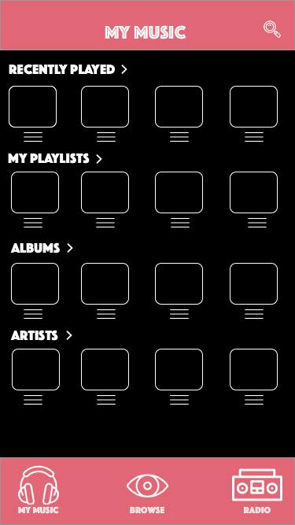 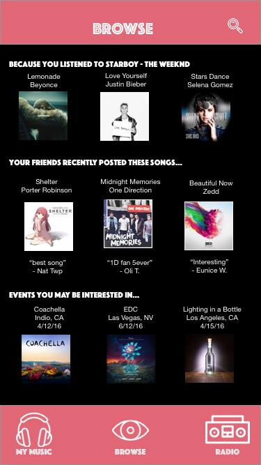 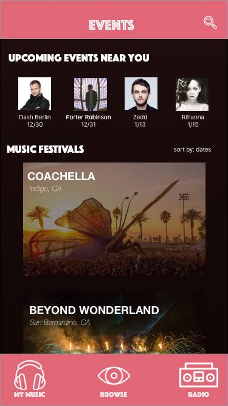 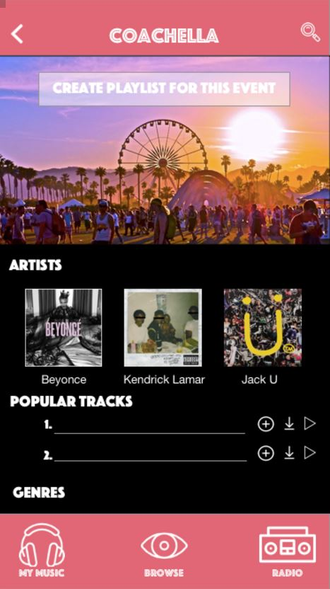 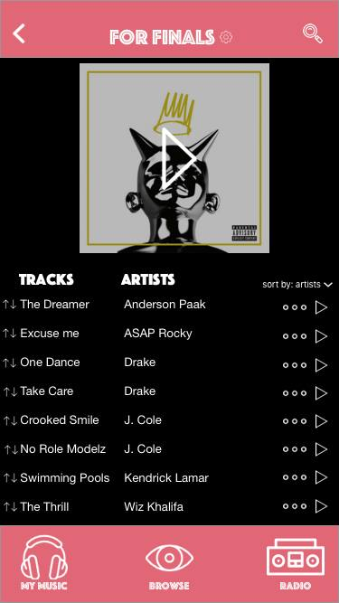Conclusion
This project was definitely a lot more difficult than I thought since there were many well-developed music streaming apps in the market. We constantly had to ask ourselves why should we use our apps and not Spotify, or SoundCloud, or Apple Music. There were many opportunties for improvements if given more time. For example, we could have focused on other functionalities, like managing playlists and downloading songs offline. From this exercise, I learned a lot about information architecture. Since music for browsing contains lots of information and different categories, it was insightful to learn how each music app categorizes genres and handles different tasks.